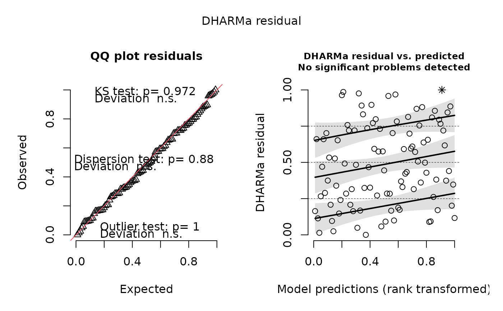

Builds a DHARMa object from the fit's family simulator: scaled
quantile residuals that are uniform under a correctly specified
model. Plot the result with plot(), or run
DHARMa::testUniformity(), DHARMa::testDispersion(),
DHARMa::testZeroInflation() and friends on it.
Arguments
- fit
A
frmtmb_fit(univariate; the family needs a simulator).- nsim
Number of simulated response vectors.
- re.form
Passed to
simulate.frmtmb_fit():NULL(default) conditions on the estimated random effects;NAredraws them.- seed
Optional RNG seed for the simulations.
- ...
Passed to
DHARMa::createDHARMa().
Ordinal responses
An ordinal fit is supported: the draws are the simulated categories
and the response is its own integer codes, so the rank transform runs
on the order alone (integerResponse = TRUE, which is what makes
DHARMa randomize within ties). The fittedPredictedResponse DHARMa
plots against is the expected category index sum_k k * P(y = k),
the same scalar residuals() scores an ordinal fit by; it sets the
horizontal axis of the display and nothing else, since the residuals
themselves come from the ranks of the draws.
A NOMINAL response (the categorical() family) is refused. A scaled
quantile residual is the predictive CDF evaluated at the observation,
and a CDF needs an ordered support. Ordinal categories have one, so
their codes carry real information; nominal ones do not, and their
1..K codes are an arbitrary labeling - relabel the levels and every
residual moves, which is not a diagnostic. DHARMa says the same of
multinomial responses in its own vignette. Check a nominal fit with
pp_check() instead (type = "bars" compares the observed category
counts with the simulated ones), or read the per-category
probabilities through conditional_effects().
Examples
if (requireNamespace("DHARMa", quietly = TRUE)) {
set.seed(1)
dd <- data.frame(x = rnorm(100), g = factor(rep(1:10, 10)))
dd$y <- rpois(100, exp(0.3 + 0.4 * dd$x + rnorm(10, 0, 0.6)[dd$g]))
fit <- frm(bf(y ~ x + (1 | g)) + poisson(), data = dd)
# scaled quantile residuals: uniform under a correct model, which
# is what Pearson residuals cannot give for a discrete family
res <- dharma_residuals(fit, nsim = 100, seed = 1)
plot(res)
DHARMa::testUniformity(res, plot = FALSE)
DHARMa::testDispersion(res, plot = FALSE)
}

#>
#> DHARMa nonparametric dispersion test via sd of residuals fitted vs.
#> simulated
#>
#> data: simulationOutput
#> dispersion = 0.99641, p-value = 0.88
#> alternative hypothesis: two.sided
#>